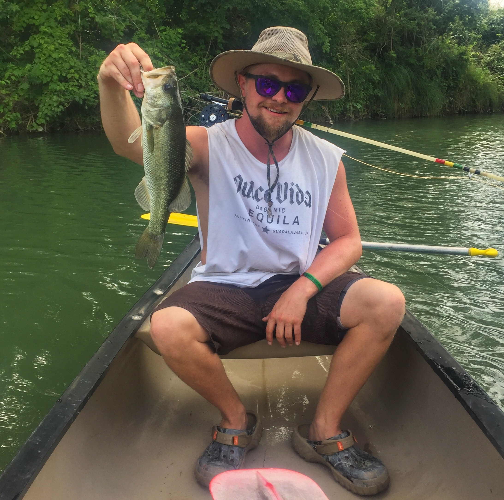

About Us
Ben Griffith

Benjamin Griffith is a MAG student pursuing a GIS degree at Texas State University.
Benjamin grew up in South Texas, near the gulf, coast which sparked his interest in studying the environment.
He received his bachelors degree in Resource and Environmental Management from Texas State with a certificate in GIS, which is now
his academic focus at the Masters level. Benjamin hopes to use his knowledge and skill set to tackle environmental issues related to the Texas Coast.
Timmy Szpakowski
Timmy Szpakowski is working for his GIS certificate which he will earn in December of 2017.
He graduated with a B.S. in Physical Geogrophy and a minor in Geology.
Is looking forward to working in the public or private sector workforce of America.
Kelly Baker

Kelly Baker from Waco, Texas and graduating this semester (Dec 16th).
She is interested in emergency management and hazards planning.
In a few years, she is planning to continue school at the University of
North Texas for her graduate degree in Emergency Management.
Anne Gilligan
Anne is a senior at Texas State University. She will be graduating with a Bachelor of Science in Resource and Environmental Studies,
minor in Business Administration and certificate in GIS in December of 2017.
Her current role is as intern at Natural Resources Solutions, a small environmental consulting company in Austin, Texas, has enabled her to perfect her to hone skills aquired during college.
She is excited to graduate and begin a career in the GIS field.
Kenny Gustafson

Kenny Gusafson, Senior at Texas State University with a major in Geographic Information Science, and minor in English,
he is a part time resident of both Texas and Colorado. His special interests include disaster
risk management and anything pertaining to the relationship between man and the environment.